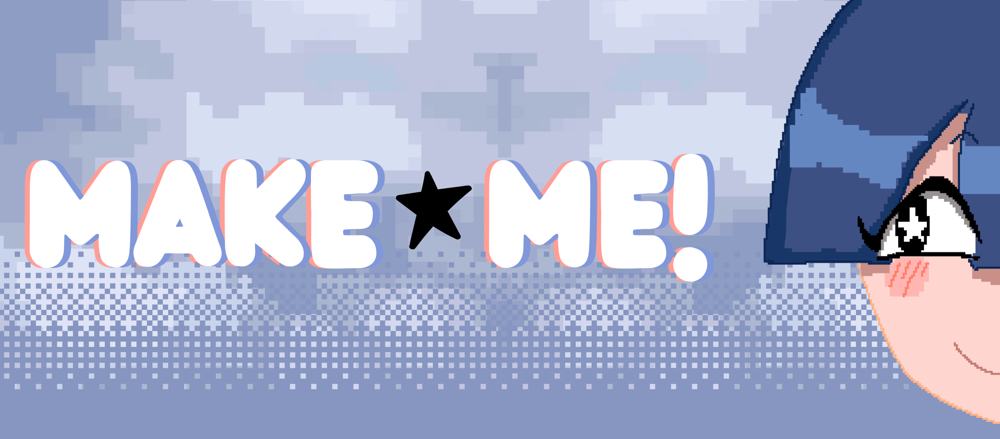
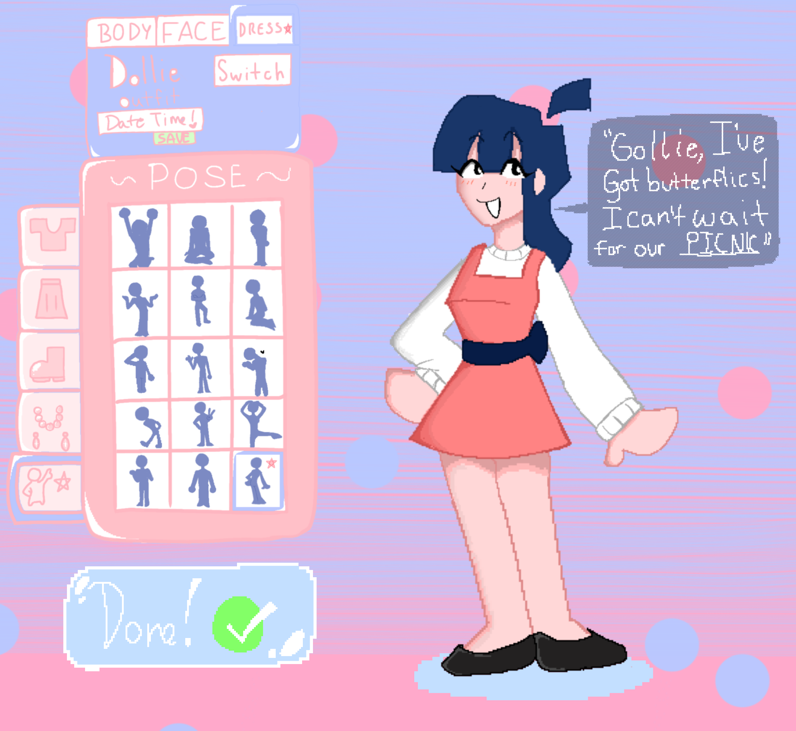
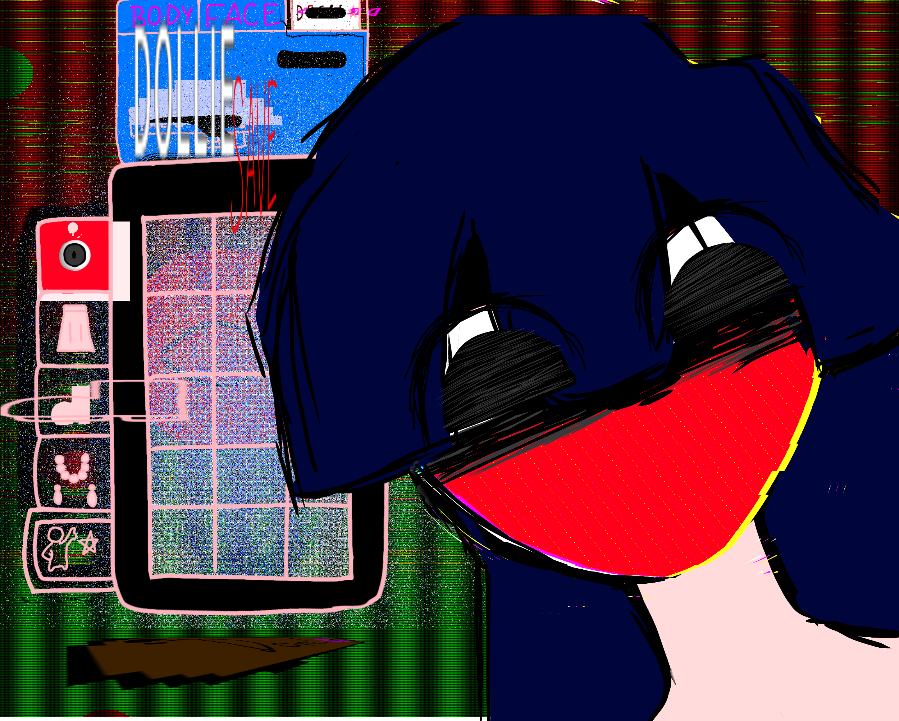

MAKE★ME!
“Let’s play dress-up, bestie! 💖”
Step into the glittering world of MAKE★ME!, where you get to style the perfect digital companion! Choose my hair, my clothes, my smile—I’m your canvas, after all! What am I even getting all fancy for? And who keeps leaving those other outfits in my closet? Haha, who knows! Just keep clicking, keep customizing, keep making me perfect.
(…Do you even see me? Are you there?)
Controls:
Mouse to Control UI
Keyboard for text input
Available for Windows and macOS

